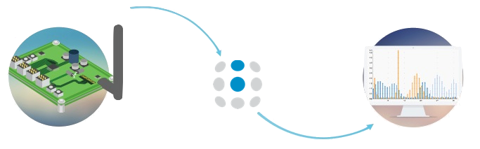
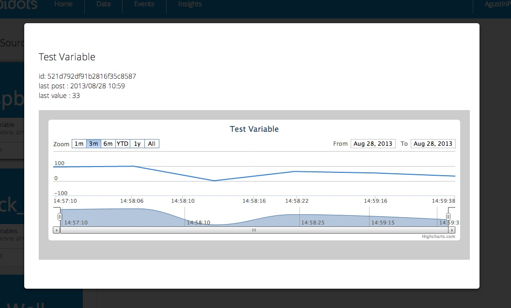

Ubidots
What is Ubidots?
Ubidots helps you create applications that capture real-world data and turn it into meaningful actions and insights.
They think that we shouldn’t have to be a web/data expert, or hire one,in order to stream your sensor data to the cloud and extract its full value through real-time visualizations.
Glossary
Before you get started with our API, here are a few concepts your should get familiar with:
Data Source
A data source is your connected device. Every data source can have one or more variables, each one containing values in a time series. For example, a “Smart Sprinkler” would be a data source, while its variables would be soil humidity and temperature.
Variable
A variable is a series of data that change over time. For example, a bike’s variables could be speed and GPS.
Value
The measurement of the variable at a given point in time. For example, “the value of the room’s temperature was 70°F at 15:02:33 EDT”
Event
Events are “IF ... THEN ...” statements that are triggered depending of the last value of a variable. For example, you can set your sprinkler to send you an SMS if the humidity level is above a given value.
Widget
Widgets are custom visualizations of your data that help you extract the value of it. You can condense a whole data set into one meaningful sentence, map or graph. For example, if a variable measures how many people looks at a product on a shelf,then use the “Statement” widget to display something like: “A total of 4.503 people have looked at the monkey in the display case”.
Ubidots Python API Client.
The Ubidots Python API Client makes calls to the Ubidots Api. The module is available on PyPI as “ubidots”.
To follow this quickstart you’ll need to have pyton 2.7 in your machine (be it a computer or an python-capable device), which you can download at www.python.org
Installing the Python library
Ubidots for python is available in PyPI and you can install it from the command line:
$ pip install ubidots==1.6.3
Don’t forget to use sudo if necessary. You can install pip in Linux and Mac using this command:
$ sudo easy_install pip
If you don’t have easy_install, you can get it through apt-get on Debian-based distributions:
$ sudo apt-get install python-setuptools
If you are using Microsoft Windows you can install pip from here.
Configure your Raspberry Pi to Ubidots cloud
-
Let’s make sure your device is up to date so that it has the latest python tools (be aware that this will take a while):
$ sudo apt-get update $ sudo apt-get upgrade -
Download the pip installer and install Ubidots’ Python library
$ sudo apt-get install python-setuptools $ sudo easy_install pip $ sudo pip install ubidots
Setup a test Variable in Ubidots
- As a logged in user navigate to the “Data” tab.
- Create a Data Source by clicking on the orange icon on the right. Then create a variable within that Data Source.
- Take note of the variable’s ID to which you want to send data. For this example we’ll use a variable with the ID: “521d792df91b2816f35c8587”
- Take note of your API key.
Send data to Ubidots
Coming back to your Raspberry Pi:
-
Create a directory called “ubidots” where you can put this and future scripts:
$ mkdir ubidotsCreate a python script using your favorite text-editor. We’ll use “nano” in this case:
$ cd ubidots $ nano ubi-test.py -
Put the following code into the created file. Please note the fields where you should put your API key and your variable ID.
from ubidots import ApiClient import random ######Create an "API" object api = ApiClient("7fj39fk3044045k89fbh34rsd9823jkfs8323") ######Create a "Variable" object test_variable = api.get_variable("521d792df91b2816f35c8587") ######Here is where you usually put the code to capture the data, either through your GPIO pins or as a calculation. We'll simply put a random value here: test_value = random.randint(1,100) ######Write the value to your variable in Ubidots test_variable.save_value({'value':test_value}) -
Run the code several times to send some random values to the cloud:
$ python ubi-test.pyYou should now see some data-points in your browser! 
Once your data is in the cloud, it’s all down the hill. You can trigger events according to your data, create insights to share, etc.